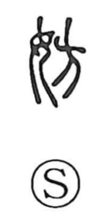

Explanation
Shirakawa reads 妨 as a phono-semantic character built on 方 as its phonetic. In archaic forms, 方 depicts a corpse suspended from a horizontal beam set at a boundary, an apotropaic marker used to drive off malign spirits. In 防, that same marker is planted before the “divine ladder” 阜—the stair by which the gods ascend and descend—to keep a sacred precinct pure. In 妨, 方 is paired with 女, understood as a priestess or temple attendant, evoking a rite in which a woman officiant is employed to block and bring to an end harmful influences pressing in from outside. From this, the character takes on the senses “to obstruct, hinder” and by extension “to ward off.” Shirakawa further illuminates the idea with the cognate 遏 “to put an end to,” which adds a ritual container for covenant-prayers to the bones of the dead, depicting a rite that halts the curse-power of the deceased—another image of obstruction in defense.